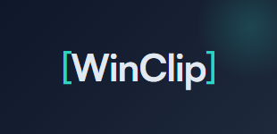
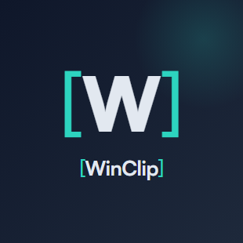
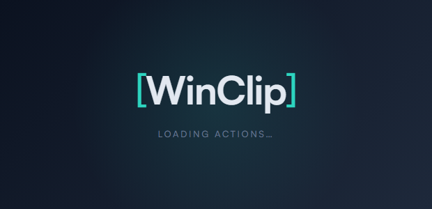
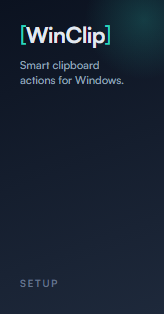

WinClip — Brand Assets
Production asset system generated from canonical SVG sources via Puppeteer + Pillow. Every PNG is rendered at its exact target size with Satoshi anti-aliased. All file paths are relative to brand/.
01 — Windows App Icon
WinClip.ico (multi-resolution bundle)
Embeds 7 PNGs from 16px to 256px. Used for the .exe file icon, Start Menu, Alt+Tab, and Add/Remove Programs.
app-icon/WinClip.ico — multi-res bundle (16/24/32/48/64/128/256)
app-icon/png/icon-*.png — individual PNGs
02 — System Tray
Transparent, theme-aware tray icons
Brackets dropped at 16/20/24 for legibility; HiDPI tray (32/48) restores the full [W]. Active state uses teal to signal a clip action firing.
tray/tray-white.ico — dark Windows theme bundle
tray/tray-dark.ico — light Windows theme bundle
tray/tray-active.ico — accent/active state bundle
tray/transparent/*.png — individual transparent PNGs
03 — Microsoft Store Tiles
Required tile sizes for Store submission
Includes scale-200 and scale-400 variants for HiDPI displays per Microsoft Store packaging spec.



store-tiles/Square44x44Logo.scale-200.png · scale-400.png
store-tiles/Square150x150Logo.scale-200.png
store-tiles/Wide310x150Logo.scale-200.png
04 — Installer (Inno Setup)
Wizard banner, header strip, .exe icon
BMP format required by Inno Setup. Reference these in installer/WinClipSetup.iss.

installer/WizardImage.bmp
installer/WizardSmallImage.bmp
installer/setup-icon.ico
05 — Website & Social
Favicon, Apple touch, Android maskable
For duncansmith.tech/apps/winclip and social share links.
06 — In-App Surfaces
Splash & about dialog header